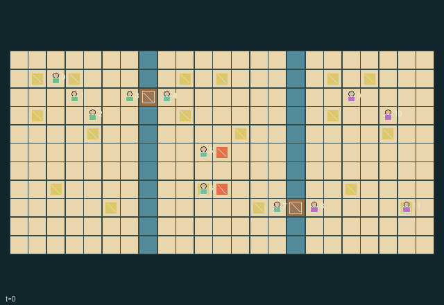

GI245 · Lantern Ferry Supper

Serve twelve staggered passenger orders before expiration, reusing plates and separating fish allergens while coordinating shared passages and heat.
Identity and original contract
12 independently actionable roles; 16 discrete commands per role; 466 native observation columns per role; original horizon 512 steps. Declared per-step reward range: -1 to 2.0. Observation regime: partially_observable.
Source SHA-256: 174bcf03003597af838bc1e3deda78823f72ba639ef3eddbc95133e55f1f29d6
The objective, rewards, population, map and horizon remain original. A preview is not a success claim.
Objective and gameplay
Serve twelve staggered passenger orders before expiration, reusing plates and separating fish allergens while coordinating shared passages and heat.
Two opposite-bank cooks move the same actual counter, removing the old crossing and opening the new one. Shared furnace heat drives all pots and the dryer but risks burns. Carried plates, ingredients and order tickets and persistent board contamination connect three kitchens.
- All twelve cooks use the same native tools/actions. For station actions stand on or beside the nearest station; ID resolves distance ties.
- Two empty-handed cooks at opposite banks must carry a counter in the same direction. Its actual position defines the crossing.
- Chop food, load a pot and retrieve it with a clean plate at progress4. Uncollected food burns at progress8.
- Fish contaminates boards and pots. Clean boards empty-handed; contaminated vegetables are rejected.
- One central furnace drives every pot and the dryer. Stoking spends finite fuel; venting reduces heat and slows both processes.
- Delivery leaves a dirty plate at the window: carry, wash, dry and reuse it.
- Separate dining windows reveal local staggered orders. Carry a ticket or hand it to an adjacent waiting cook.
- Only radius-three local information appears in role views; human and AI actions call this same native transition.
Ending: All twelve orders have arrived and all active orders have been served or expired. Service closure includes missed orders, so natural termination does not assert success. Otherwise H=512.
What this game explores
Resource commons & externalities: An action changes a persistent resource or burden that another role also encounters. Compare extraction with maintenance and record the downstream resource trajectory.
Complementary production & service: A useful outcome requires ordered stages, scarce equipment or another role's capability. Measure real completed products and resource circulation rather than counting intermediate actions as success.
Joint transport & shared access: Positions, load geometry, occupancy and persistent access constrain whose action can succeed next. Distinguish physical handoff, shared controls and simultaneous force from a cosmetic cooperation label.
Survival, protection & rescue: Protection and repair alter another role's future feasible actions. Record losses, exposure, rescue and infrastructure as well as delivery; survival is determined by the actual kernel.
These are questions supported by rule structure, not observed learning effects.
Play it: operating walkthrough
crucibles play --game gi245Keep Python running and open its printed address. Select this game, set a seed and press Create session. The game itself is always English.
Assign a role range to Host with Assign / take over, or Assign all roles. Invite a second participant with Create player invitation, then assign a disjoint subset. Every original role is available.
For every owned role choose a legal command and press Queue. Arrow keys / WASD queue a declared directional action for the current role camera when available. Space or Advance one joint step advances everyone together. Non-directional games use the selectors.
Unqueued roles use the labelled untrained uniform-legal policy. Take over or release roles before the next step without resetting. Full-state debug is privileged and permanently logged; role cameras preserve permissions. Close the session to retain logs. Server restart does not restore sessions.
Complete command reference
IDs and English labels exactly match the manifest. Availability depends on role, resources, location and phase. An available action can still have no productive effect.
0·Wait / receive adjacent handoff
1·Move north
2·Move east
3·Move south
4·Move west
5·Pick pantry food, plate, plated ready pot meal or dry cabinet plate
6·Chop carried raw ingredient at board
7·Wash dirty plate at sink or empty-handed clean board
8·Load chopped food into pot or wet plate into dryer
9·Serve plated meal at dining window
10·Stoke nearby shared furnace with fuel
11·Vent nearby shared furnace
12·Empty-handed carry gangway downward with opposite-bank partner
13·Empty-handed carry gangway upward with opposite-bank partner
14·Take local current order ticket
15·Handoff item and ticket to adjacent empty waiting cook
Roles and capability identifiers
These original role names describe capabilities, not interchangeable skins. Check each owned role's legal selector before planning handoffs.
agent_0·cook / pantry runner; group0, member0
agent_1·cook / prep runner; group0, member1
agent_2·cook / stove runner; group0, member2
agent_3·cook / service runner; group0, member3
agent_4·cook / pantry runner; group1, member0
agent_5·cook / prep runner; group1, member1
agent_6·cook / stove runner; group1, member2
agent_7·cook / service runner; group1, member3
agent_8·cook / pantry runner; group2, member0
agent_9·cook / prep runner; group2, member1
agent_10·cook / stove runner; group2, member2
agent_11·cook / service runner; group2, member3
Information and observation permissions
Self fields plus Chebyshev radius-three local map/entity fields; no within-square occlusion. Hidden rows and outside-map patch cells zero with presence. Dynamic remote state is not observed. Event rendering must suppress hidden entity events; debug/full-state view is separate. The explicitly listed own team score summaries are self information.
The GIF is full-state debug and may reveal hidden entities or private state. Train on obs[agent], not the picture, state tree or another role's private row. Field slices and visibility are in the original manifest.
Reinforcement-learning integration
import jax
from crucibles_jaxmarl import make
env = make("gi245")
key = jax.random.PRNGKey(0)
key, rk, ak, sk = jax.random.split(key, 4)
obs, state = jax.jit(env.reset)(rk)
actions = env.sample_actions(ak, state)
obs, state, rewards, dones, info = jax.jit(env.step_env)(sk, state, actions)
done = dones["__all__"]Observations are float32 vectors of width 466; actions are scalar int32; masks have 16 entries. Supply all 12 roles each transition. Masked sampling is an engineering reference, not a trained learner.
step_env retains terminal data without reset. step performs outer autoreset and keeps terminal data in info["raw_state"] and info["raw_observation"]. Use dones["__all__"] for episode boundaries; separate completion, failure and time limit in analysis.
JIT or vmap equal identities and shapes. Split independent reset, policy and transition keys. Group different shapes explicitly; do not shrink the population or horizon. Host rendering stays outside training.
Training questions and fair evaluation
Define valid completion from the objective before fitting. Preserve original rewards and also report real deliveries/services, losses, resource state, unresolved episodes and per-role returns. Animation is not a reward signal.
An action changes a persistent resource or burden that another role also encounters. Compare extraction with maintenance and record the downstream resource trajectory.
A useful outcome requires ordered stages, scarce equipment or another role's capability. Measure real completed products and resource circulation rather than counting intermediate actions as success.
Positions, load geometry, occupancy and persistent access constrain whose action can succeed next. Distinguish physical handoff, shared controls and simultaneous force from a cosmetic cooperation label.
Protection and repair alter another role's future feasible actions. Record losses, exposure, rescue and infrastructure as well as delivery; survival is determined by the actual kernel.
Compare memory, communication or centralized critics under matched actor information. Declare critic access; keep actor inputs role-filtered. Match partner/opponent distributions, masks, compute and checkpoint selection. Final tests never enter fitting or selection.
Independent training runs or source-pairing blocks are inferential units; episodes from one policy are not independent training replications. Save hashes, keys, versions, device, time and cost. Negative, zero, failed and indeterminate outcomes are valid. No trained checkpoint or target score is supplied.
Classification and evidence
Overlapping editorial labels are reading aids, not proof of novelty, difficulty, strategic equivalence or learning effects.
- Resource commons & externalities
- Evidence
manifest.task.objective: Serve twelve staggered passenger orders before expiration, reusing plates and separating fish allergens while coordinating shared passages and heat.
- Evidence
manifest.task.interaction: Two opposite-bank cooks move the same actual counter, removing the old crossing and opening the new one. Shared furnace heat drives all pots and the dryer but risks burns. Carried plates, ingredients and order tickets and persistent board contamination connect three kitchens.
- Evidence
scene.rules.4: One central furnace drives every pot and the dryer. Stoking spends finite fuel; venting reduces heat and slows both processes.
- Complementary production & service
- Evidence
manifest.task.objective: Serve twelve staggered passenger orders before expiration, reusing plates and separating fish allergens while coordinating shared passages and heat.
- Evidence
manifest.task.interaction: Two opposite-bank cooks move the same actual counter, removing the old crossing and opening the new one. Shared furnace heat drives all pots and the dryer but risks burns. Carried plates, ingredients and order tickets and persistent board contamination connect three kitchens.
- Evidence
manifest.actions.5: Pick pantry food, plate, plated ready pot meal or dry cabinet plate
- Joint transport & shared access
- Evidence
manifest.task.interaction: Two opposite-bank cooks move the same actual counter, removing the old crossing and opening the new one. Shared furnace heat drives all pots and the dryer but risks burns. Carried plates, ingredients and order tickets and persistent board contamination connect three kitchens.
- Evidence
manifest.actions.6: Chop carried raw ingredient at board
- Evidence
manifest.actions.12: Empty-handed carry gangway downward with opposite-bank partner
- Survival, protection & rescue
- Evidence
manifest.task.objective: Serve twelve staggered passenger orders before expiration, reusing plates and separating fish allergens while coordinating shared passages and heat.
Source, receipts and preview limits
The world-only English GIF replays saved untrained legal actions through the original kernel. At most 25 actual endpoints include initial and terminal state; no invented interpolation. It is full-state debug, not the role observation.
Original source, observation slices, manifest and mechanism
Native receipt · Presentation receipt
Engineering passes do not establish learning. Nonzero floating differences remain recorded and undetermined; no new tolerance was introduced. Human scores remain unverified.